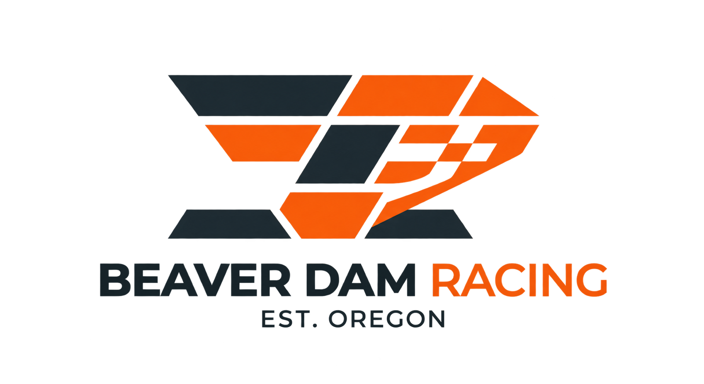

Build the foundation
Turn a road-going beater and a committed crew into a safe, unmistakable platform for impact.

Oregon State roots · Oregon-built racing
We’re building a 24 Hours of Lemons team that turns every scrappy lap into a stronger foundation for causes that matter.
Season one supports the Alzheimer’s Association. Our official campaign link will be added when it goes live.
Car to build
Founding drivers
Lemons vehicle cap*
Cause per season
*Safety equipment and other rule-defined items are excluded from the vehicle-cost cap.
A strong foundation can carry a cause far beyond the paddock.
Beaver Dam Racing takes its name from the Oregon State roots shared by founding drivers Wade Bennett and James Grey—and from what a beaver dam represents: many small efforts joining to create a foundation where something bigger can grow.
We use the spectacle, teamwork, and glorious absurdity of endurance racing to build that foundation for charitable momentum.
Our first season centers the Alzheimer’s Association. Donations will flow through an official Association campaign rather than through our operating account, keeping the charitable ask clear and direct.
Turn a road-going beater and a committed crew into a safe, unmistakable platform for impact.
Compete in 24 Hours of Lemons events and bring supporters into the story.
Point every fundraising message to the charity’s official giving experience.
Season one cause
The Alzheimer’s Association’s Do What You Love program gives communities a flexible way to turn almost any activity into a fundraiser. We’re bringing a race car.
Explore the program Beaver Dam Racing is independently operated. Alzheimer’s Association name use and fundraising activity will follow the parties’ written agreement and approved campaign materials.Three seats claimed. One seat still looking for its human.
Builders, operators, and drivers united by Oregon roots, questionable automotive judgment, and a very good reason to keep going.
Founding driver
An Oregon State alumnus, former nursing home administrator, and founding driver, Wade brings both Beaver roots and direct experience with residents and families affected by memory loss.
View LinkedIn profile ↗Founding driver
A founding driver helping build the team, the car, and a respectful season-one platform that points supporters directly to the Alzheimer’s Association.
View LinkedIn profile ↗Founding driver · Head of operations
An Oregon State alumnus and former memory care facility administrator, James is a founding driver and head of operations with a direct connection to the people and families at the heart of the cause.
View LinkedIn profile ↗Fourth driver
Help build the foundation
We’re looking for practical partners: safety suppliers, garages, parts experts, storytellers, and mission-aligned sponsors who want to help build the team—and the impact—from the ground up.
Message James on LinkedIn